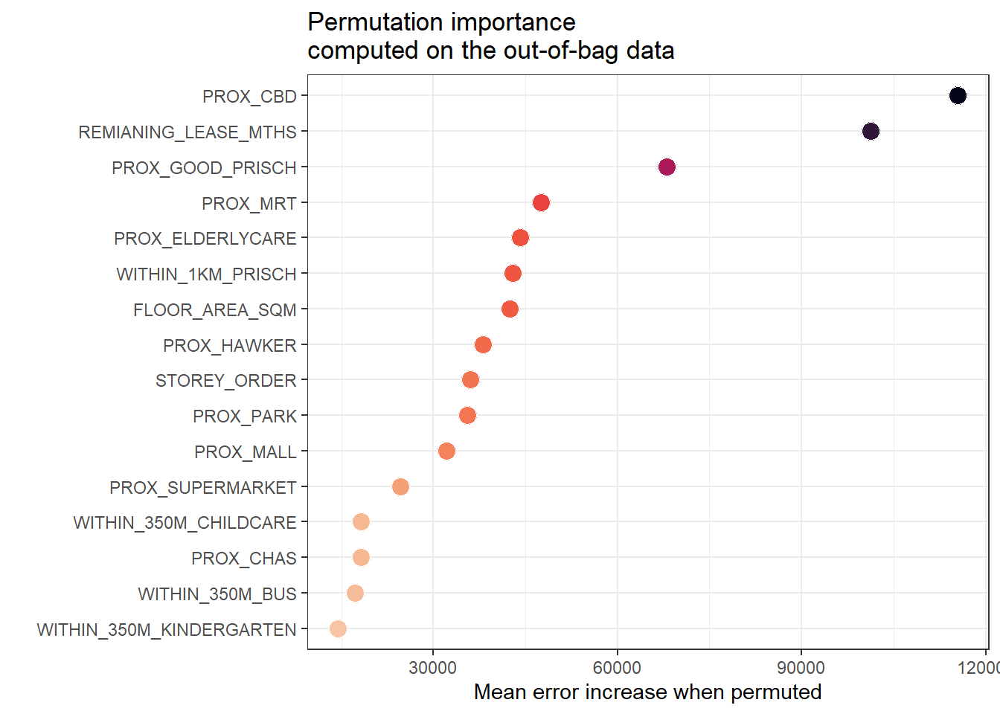
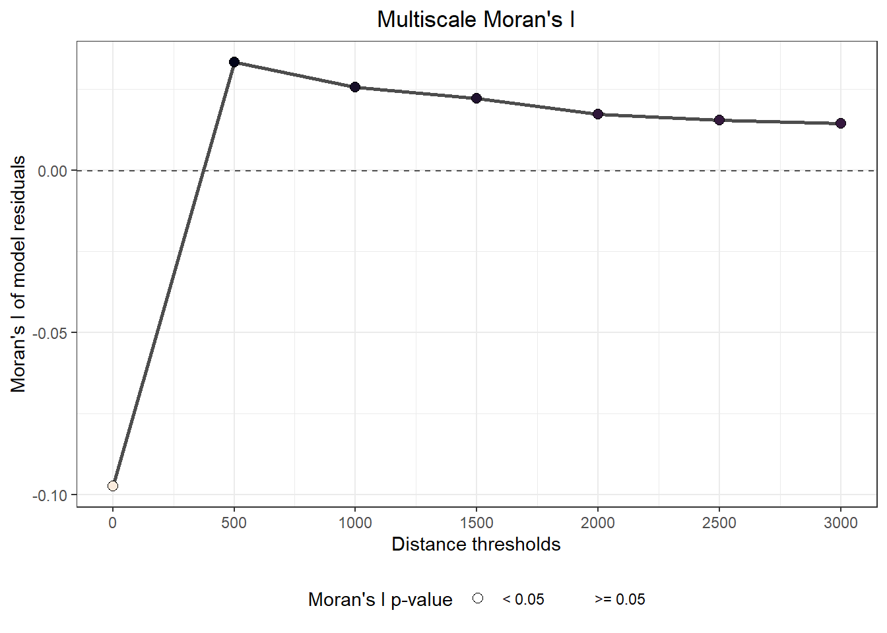
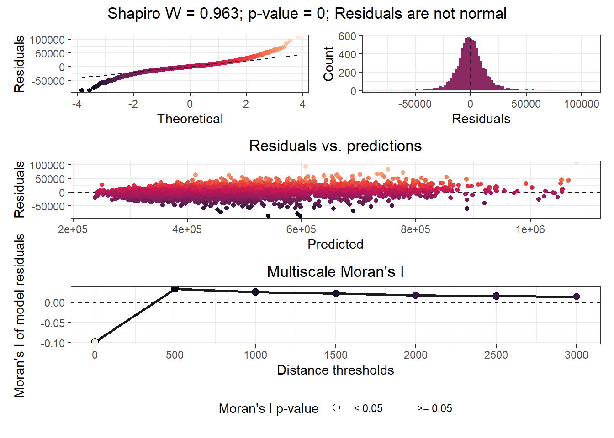
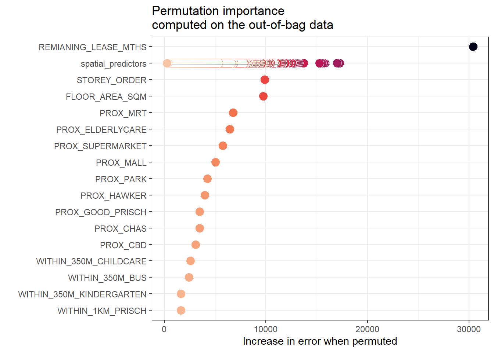
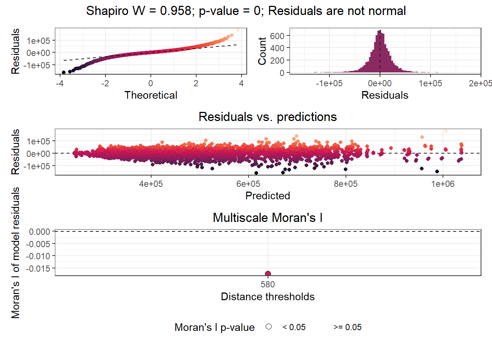

pacman::p_load(sf, tidyverse, tmap,
tidymodels, spatialRF)In-class Exercise 9: Geographically Weighted Predictive Modelling: SpatialRF methods
Overview
In this in-class exercise, you will learn how to perform predictive modelling by using spatialRF package.
Datasets
For the purpose of this in-class exercise, the following HDB
Install and Load R packages
The Data
Importing geospatial data
The geospatial data used in this hands-on exercise is called MP14_SUBZONE_WEB_PL. It is in ESRI shapefile format. The shapefile consists of URA Master Plan 2014’s planning subzone boundaries. Polygon features are used to represent these geographic boundaries. The GIS data is in svy21 projected coordinates systems.
The code chunk below is used to import MP_SUBZONE_WEB_PL shapefile by using st_read() of sf packages.
mpsz = st_read(dsn = "data/geospatial",
layer = "MP14_SUBZONE_WEB_PL") %>%
st_transform(3414)Reading layer `MP14_SUBZONE_WEB_PL' from data source
`D:\tskam\IS415-GAA\In-class_Ex\In-class_Ex09\data\geospatial'
using driver `ESRI Shapefile'
Simple feature collection with 323 features and 15 fields
Geometry type: MULTIPOLYGON
Dimension: XY
Bounding box: xmin: 2667.538 ymin: 15748.72 xmax: 56396.44 ymax: 50256.33
Projected CRS: SVY21Importing HBD resale data
In this in-class exercise, HDB resale 2017 data set called HDB_resale will be used. It is in rds format and is available in rds sub-folder of In-class_Ex09.
Using appropriate tidyverse function to import HDB_resale.rds into R environment. Name the output object rs_tbl.
rs_sf = read_rds("data/rds/HDB_resale.rds")Using appropriate R function to check the object class of rs_tbl.
class(rs_sf)[1] "sf" "tbl_df" "tbl" "data.frame"Data Sampling
Next, we will split rs_sf into training and test data sets with 65% and 35% respectively.
Using appropriate function of rsample package, derive the training and test data sets from rs_sf. Called the output objects train_data and test_data respectively.
set.seed(1234)
resale_split <- initial_split(rs_sf,
prop = 5/10,)
train_data <- training(resale_split)
test_data <- testing(resale_split)Preparing Coordinates Data
Extracting coordinates data
Using appropriate sf fucntion, extract the x,y coordinates of the full, training and test data sets.
coords <- st_coordinates(rs_sf)
coords_train <- st_coordinates(train_data)
coords_test <- st_coordinates(test_data)Before continue, we write all the output into rds for future used.
coords_train <- write_rds(coords_train, "data/rds/coords_train.rds" )
coords_test <- write_rds(coords_test, "data/rds/coords_test.rds" )14.9.2 Dropping geometry field
First, we will drop geometry column of the sf data.frame by using st_drop_geometry() of sf package.
train_data <- train_data %>% st_drop_geometry()
Geographically Weighted Predictive Model: spatialRF methods
Computing distance matrix
dm_train <- dist(coords_train)
dm_test <- dist(coords_test)train_dm <- as.matrix(dm_train)
test_dm <- as.matrix(dm_test)Write the data frame into rds for future use.
write_rds(train_dm,
"data/spatialRF/train_dm.rds")
write_rds(test_dm,
"data/spatialRF/test_dm.rds")Converting from sf object to data frame
Using appropriate sf and R functions to perform the following tasks:
- drop the geometry column from train_data and test_data, and
- convert both into data frame.
train_df <- train_data %>%
st_drop_geometry() %>%
as.data.frame()
test_df <- test_data %>%
st_drop_geometry() %>%
as.data.frame()Reading the modelling data sets
dist_th <- c(0, 500, 1000, 1500, 2000, 2500, 3000)mem <- mem(dist_mat)vif(train_df[,2:17]) variable vif
1 PROX_CBD 2.574
2 PROX_GOOD_PRISCH 1.859
3 WITHIN_1KM_PRISCH 1.545
4 PROX_MALL 1.431
5 REMIANING_LEASE_MTHS 1.382
6 WITHIN_350M_CHILDCARE 1.344
7 PROX_SUPERMARKET 1.339
8 PROX_CHAS 1.328
9 PROX_PARK 1.246
10 PROX_MRT 1.245
11 PROX_HAWKER 1.238
12 STOREY_ORDER 1.206
13 PROX_ELDERLYCARE 1.193
14 WITHIN_350M_BUS 1.156
15 FLOOR_AREA_SQM 1.150
16 WITHIN_350M_KINDERGARTEN 1.130sum(apply(train_df, 2, is.na))[1] 0apply(train_df, 2, var) == 0 RESALE_PRICE FLOOR_AREA_SQM STOREY_ORDER
FALSE FALSE FALSE
REMIANING_LEASE_MTHS PROX_CBD PROX_ELDERLYCARE
FALSE FALSE FALSE
PROX_HAWKER PROX_MRT PROX_PARK
FALSE FALSE FALSE
PROX_GOOD_PRISCH PROX_MALL PROX_CHAS
FALSE FALSE FALSE
PROX_SUPERMARKET WITHIN_350M_KINDERGARTEN WITHIN_350M_CHILDCARE
FALSE FALSE FALSE
WITHIN_350M_BUS WITHIN_1KM_PRISCH
FALSE FALSE sum(apply(scale(train_df), 2, is.nan))[1] 0sum(apply(scale(train_df), 2, is.infinite))[1] 0Fitting a non-spatial random forest model
rs_rf <- rf(
data = train_df,
dependent.variable.name = "RESALE_PRICE",
predictor.variable.names = colnames(train_df)[2:17],
distance.matrix = train_dm,
distance.thresholds = dist_th,
seed = 1234,
n.cores = 16
)


Model type
- Fitted with: ranger()
- Response variable: RESALE_PRICE
Random forest parameters
- Type: Regression
- Number of trees: 500
- Sample size: 7950
- Number of predictors: 16
- Mtry: 4
- Minimum node size: 5
Model performance
- R squared (oob): 0.9494482
- R squared (cor(obs, pred)^2): 0.9883209
- Pseudo R squared (cor(obs, pred)):0.9941433
- RMSE (oob): 26920.18
- RMSE: 13370.28
- Normalized RMSE: 0.1133074
Model residuals
- Stats:
┌───────────┬──────────┬─────────┬───────┬─────────┬───────────┐
│ Min. │ 1st Q. │ Median │ Mean │ 3rd Q. │ Max. │
├───────────┼──────────┼─────────┼───────┼─────────┼───────────┤
│ -87026.25 │ -7326.43 │ -345.20 │ 29.72 │ 6994.44 │ 106191.47 │
└───────────┴──────────┴─────────┴───────┴─────────┴───────────┘
- Normality:
- Shapiro-Wilks W: 0.963
- p-value : 0
- Interpretation : Residuals are not normal
- Spatial autocorrelation:
┌──────────┬───────────┬─────────┬──────────────────┐
│ Distance │ Moran's I │ P value │ Interpretation │
├──────────┼───────────┼─────────┼──────────────────┤
│ 0.0 │ -0.097 │ 0.000 │ Negative spatial │
│ │ │ │ correlation │
├──────────┼───────────┼─────────┼──────────────────┤
│ 500.0 │ 0.033 │ 0.000 │ Positive spatial │
│ │ │ │ correlation │
├──────────┼───────────┼─────────┼──────────────────┤
│ 1000.0 │ 0.026 │ 0.000 │ Positive spatial │
│ │ │ │ correlation │
├──────────┼───────────┼─────────┼──────────────────┤
│ 1500.0 │ 0.022 │ 0.000 │ Positive spatial │
│ │ │ │ correlation │
├──────────┼───────────┼─────────┼──────────────────┤
│ 2000.0 │ 0.017 │ 0.000 │ Positive spatial │
│ │ │ │ correlation │
├──────────┼───────────┼─────────┼──────────────────┤
│ 2500.0 │ 0.016 │ 0.000 │ Positive spatial │
│ │ │ │ correlation │
├──────────┼───────────┼─────────┼──────────────────┤
│ 3000.0 │ 0.015 │ 0.000 │ Positive spatial │
│ │ │ │ correlation │
└──────────┴───────────┴─────────┴──────────────────┘
Variable importance:
┌──────────────────────────┬────────────┐
│ Variable │ Importance │
├──────────────────────────┼────────────┤
│ PROX_CBD │ 115466.348 │
├──────────────────────────┼────────────┤
│ REMIANING_LEASE_MTHS │ 101297.023 │
├──────────────────────────┼────────────┤
│ PROX_GOOD_PRISCH │ 68078.336 │
├──────────────────────────┼────────────┤
│ PROX_MRT │ 47483.984 │
├──────────────────────────┼────────────┤
│ PROX_ELDERLYCARE │ 44118.374 │
├──────────────────────────┼────────────┤
│ WITHIN_1KM_PRISCH │ 42979.212 │
├──────────────────────────┼────────────┤
│ FLOOR_AREA_SQM │ 42432.236 │
├──────────────────────────┼────────────┤
│ PROX_HAWKER │ 38059.008 │
├──────────────────────────┼────────────┤
│ STOREY_ORDER │ 35989.756 │
├──────────────────────────┼────────────┤
│ PROX_PARK │ 35575.073 │
├──────────────────────────┼────────────┤
│ PROX_MALL │ 32134.797 │
├──────────────────────────┼────────────┤
│ PROX_SUPERMARKET │ 24601.096 │
├──────────────────────────┼────────────┤
│ WITHIN_350M_CHILDCARE │ 18253.872 │
├──────────────────────────┼────────────┤
│ PROX_CHAS │ 18133.172 │
├──────────────────────────┼────────────┤
│ WITHIN_350M_BUS │ 17194.097 │
├──────────────────────────┼────────────┤
│ WITHIN_350M_KINDERGARTEN │ 14461.568 │
└──────────────────────────┴────────────┘write_rds(rs_rf,
"data/spatialRF/rs_rf.rds")
Warning
This is a very time-consuming process.
plot_training_df_moran(
data = condo_resale,
dependent.variable.name = "SELLING_PRICE",
predictor.variable.names = colnames(condo_resale)[5:23],
distance.matrix = dist_mat,
distance.thresholds = dist_th,
point.color = "gray40"
)Retrieving RF results
rs_rf <- read_rds("data/spatialRF/rs_rf.rds")plot_moran(rs_rf,
verbose = FALSE)Calibrating Spatial Random Forest
rs_sprf <- rf_spatial(
data = train_df,
dependent.variable.name = "RESALE_PRICE",
predictor.variable.names = colnames(train_df)[2:17],
distance.matrix = train_dm,
distance.thresholds = 580,
method = "hengl",
n.cores = 16
)Model type
- Fitted with: rf_spatial()
- rf_spatial() method: hengl
- Response variable: RESALE_PRICE
Random forest parameters
- Type: Regression
- Number of trees: 500
- Sample size: 7950
- Number of predictors: 7966
- Mtry: 89
- Minimum node size: 5
Model performance
- R squared (oob): 0.9137676
- R squared (cor(obs, pred)^2): 0.9665135
- Pseudo R squared (cor(obs, pred)):0.9831142
- RMSE (oob): 35159.67
- RMSE: 21979.42
- Normalized RMSE: 0.1862663
Model residuals
- Stats:
┌────────────┬───────────┬─────────┬─────────┬──────────┬───────────┐
│ Min. │ 1st Q. │ Median │ Mean │ 3rd Q. │ Max. │
├────────────┼───────────┼─────────┼─────────┼──────────┼───────────┤
│ -160787.03 │ -11083.58 │ -116.03 │ -283.98 │ 11202.34 │ 181009.97 │
└────────────┴───────────┴─────────┴─────────┴──────────┴───────────┘
- Normality:
- Shapiro-Wilks W: 0.958
- p-value : 0
- Interpretation : Residuals are not normal
- Spatial autocorrelation:
┌──────────┬───────────┬─────────┬──────────────────┐
│ Distance │ Moran's I │ P value │ Interpretation │
├──────────┼───────────┼─────────┼──────────────────┤
│ 580.0 │ -0.017 │ 0.000 │ Negative spatial │
│ │ │ │ correlation │
└──────────┴───────────┴─────────┴──────────────────┘
Variable importance:
┌────────────────────────────────────┬────────────┐
│ Variable │ Importance │
├────────────────────────────────────┼────────────┤
│ REMIANING_LEASE_MTHS │ 30401.006 │
├────────────────────────────────────┼────────────┤
│ spatial_predictors (max) │ 17268.053 │
├────────────────────────────────────┼────────────┤
│ STOREY_ORDER │ 9867.741 │
├────────────────────────────────────┼────────────┤
│ FLOOR_AREA_SQM │ 9721.497 │
├────────────────────────────────────┼────────────┤
│ PROX_MRT │ 6757.921 │
├────────────────────────────────────┼────────────┤
│ PROX_ELDERLYCARE │ 6440.545 │
├────────────────────────────────────┼────────────┤
│ PROX_SUPERMARKET │ 5763.097 │
├────────────────────────────────────┼────────────┤
│ PROX_MALL │ 5018.655 │
├────────────────────────────────────┼────────────┤
│ PROX_PARK │ 4234.020 │
├────────────────────────────────────┼────────────┤
│ PROX_HAWKER │ 3975.560 │
├────────────────────────────────────┼────────────┤
│ PROX_GOOD_PRISCH │ 3473.198 │
├────────────────────────────────────┼────────────┤
│ PROX_CHAS │ 3456.148 │
├────────────────────────────────────┼────────────┤
│ PROX_CBD │ 3077.939 │
├────────────────────────────────────┼────────────┤
│ WITHIN_350M_CHILDCARE │ 2582.144 │
├────────────────────────────────────┼────────────┤
│ spatial_predictors (quantile 0.75) │ 2551.512 │
├────────────────────────────────────┼────────────┤
│ WITHIN_350M_BUS │ 2403.532 │
├────────────────────────────────────┼────────────┤
│ spatial_predictors (median) │ 1796.657 │
├────────────────────────────────────┼────────────┤
│ WITHIN_350M_KINDERGARTEN │ 1625.543 │
├────────────────────────────────────┼────────────┤
│ WITHIN_1KM_PRISCH │ 1608.013 │
├────────────────────────────────────┼────────────┤
│ spatial_predictors (quantile 0.25) │ 1322.933 │
├────────────────────────────────────┼────────────┤
│ spatial_predictors (min) │ 257.898 │
└────────────────────────────────────┴────────────┘

write_rds(rs_sprf, "data/spatialRF/rs_sprf.rds")